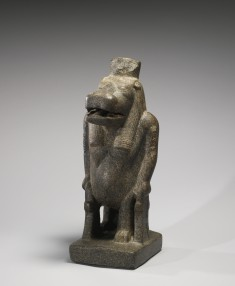

Tick tock! Walk to the beat of the ticking, tocking...
. . . and find the hip hip hopping hippopotamus. (The Egyptian Gallery is on Level 2: Ask the other time travelers dressed as security guards for help getting there...but don't forget to walk to the beat!)

< 6
8 >